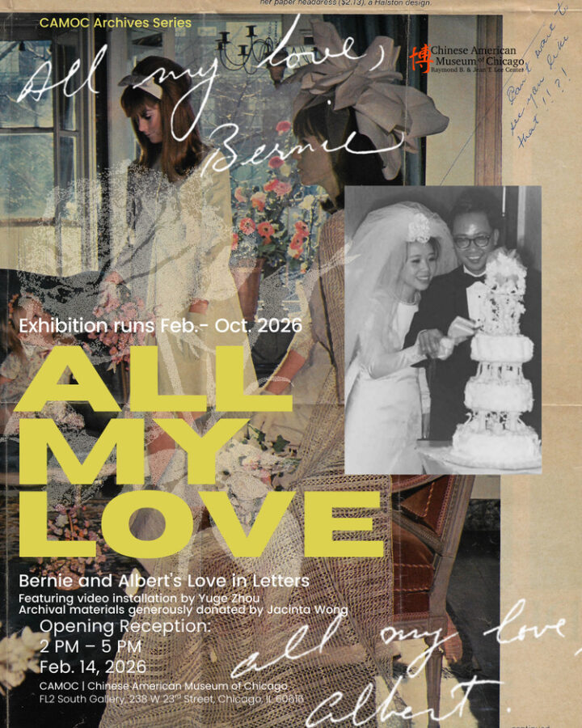

All My Love
We are excited to announce that ALL MY LOVE is opening this Valentine’s Day!
This exhibition presents the intimate correspondence between the Chinatown legend Bernarda “Bernie” Lo and her (then) boyfriend Albert Wong during the early years of their relationship.
While known as a force behind transformational community service work decades later, these letters show the quotidien beginnings of this American couple: two immigrants from Hong Kong whose love blossomed as they navigated life in the American Midwest during the 1960s. Through their ordinary letters—each one signed off “All my love”—this exhibition traces how love was understood, negotiated, and practiced within a shifting social landscape. Their private exchange invites us to imagine how they navigated the physical, social, and emotional terrains of transnational migration.
The exhibition brings the original letters, photographs, and personal artifacts from the CAMOC archives, and a video installation by Yuge Zhou. Along with new donations from their daughter, Jacinta Wong, they together create a space that invites intergenerational dialogue about love, memory, and the ongoing search for home.
P.S. RSVP to the opening reception!